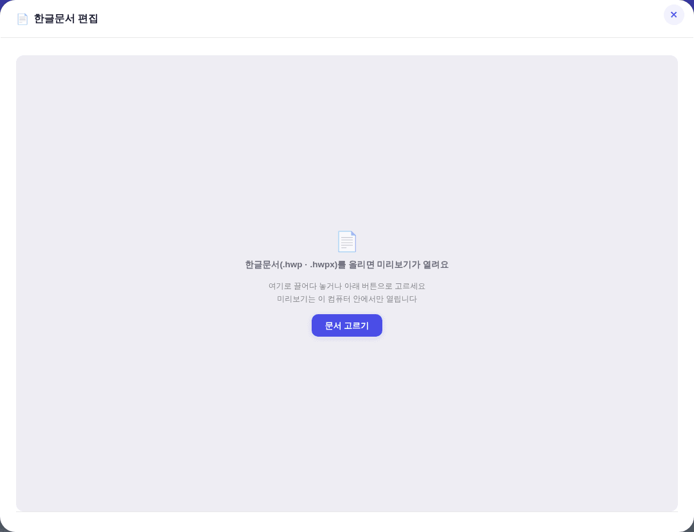
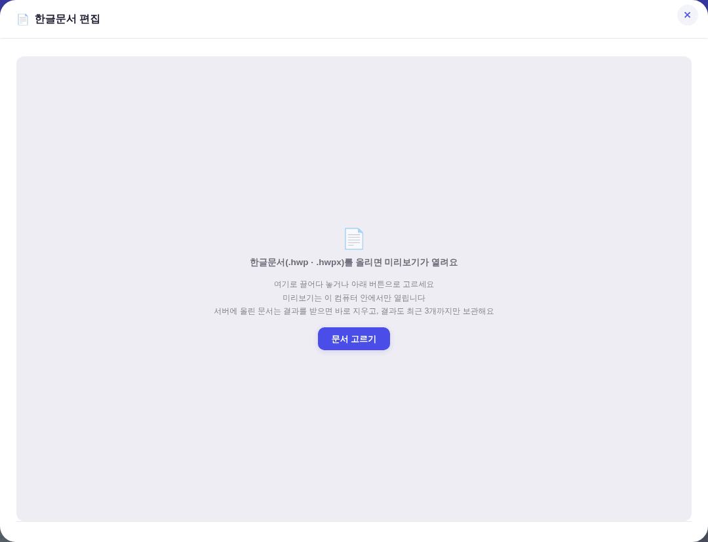
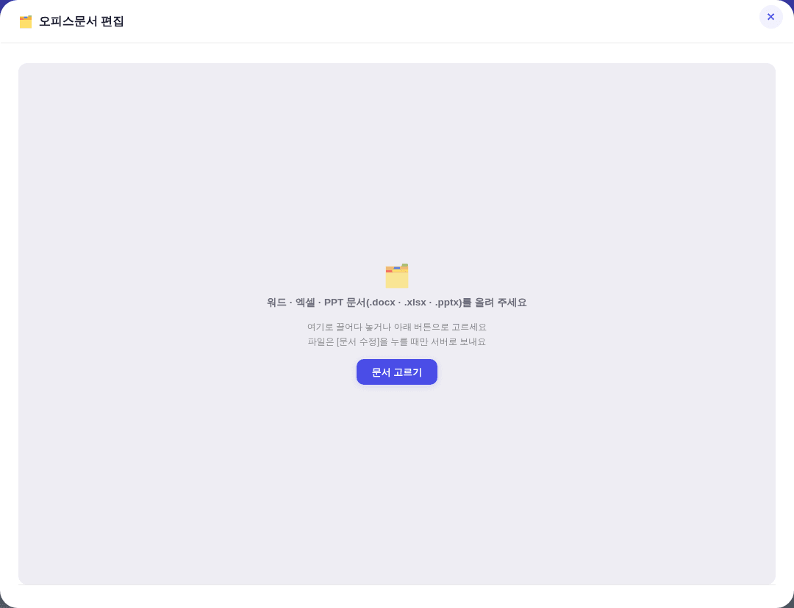
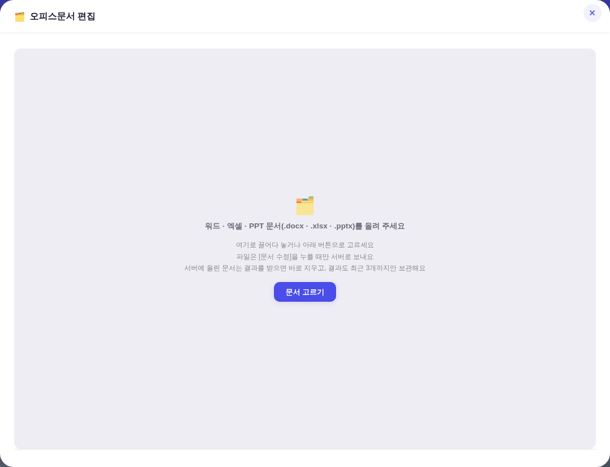
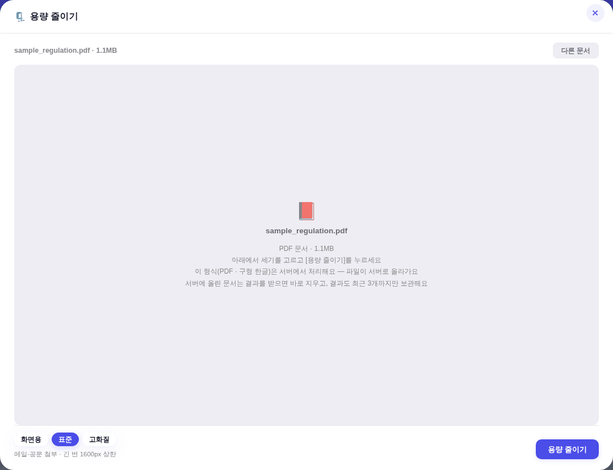

지시(운영자): 「문서 최근 3개까지만 쌓이게하고 안쌓이게해줘 ui에도 반영 디자인 정본따라서」
| 워크플로 | 구 회수 코드 | 실제 동작 |
|---|---|---|
nb-blog.yml | /^yc(\d+)r\d+\.json$/ 만 3일 TTL |
주석에 「블로그 초안(nb*)은 무접촉」이라고 명시 — nb는 아예 안 지웠다. 260805 실측 nb 18건 누적 |
hwp-edit.ymloffice-edit.yml | /^of(\d+)\.(in|out)\./ 3일 TTL |
id = 접두 + Date.now()(13자리) + 난수(≤3자리) → (\d+)가 16자리(≈1.75e15)를 통째로 캡처 →
now − 그것이 늘 음수 → > ttl이 영영 참이 안 됨 = 회수가 한 번도 안 돌았다 |
raw.githubusercontent.com에 비인증 GET → HTTP 200 실측.
즉 drafts/에 남은 파일은 누구나 받을 수 있다 — 남겨 두는 개수가 곧 노출 면적이다.공용 회수기 shared/drafts_retain.mjs 신설. 네 워크플로(nb-blog·hwp-edit·office-edit·slim)가
커밋 직전에 호출한다. 정기 크론은 안 만들었다 — 이 레포는 정기 봇 커밋 축이 없고(CLAUDE.md 「빌드 큐」 절), 신설하면 그 절의 짝 규칙이 따라붙는다.
\d{13}로 못박음).nb·yc·hw·of·sl)별로 최근 3개. 이번 런 id는 개수와 무관하게 보호..in)은 이번 런 것만 남긴다 — 결과가 나온 뒤엔 쓸모가 없고, 남의 문서 노출만 늘린다.접두 5종 × 5건 + 하위폴더 in/out + 사람이 둔 README.md를 만들어 돌린 결과:
| 검사 | 결과 |
|---|---|
| 접두별 3건만 잔존 (nb·yc·hw·of·sl) | 통과 |
규약 밖 파일(README.md) 무접촉 | 통과 |
.in은 이번 런 것 1건만 잔존 | 통과 |
.out은 3건 | 통과 |
drafts/에 적용| 전 | 후 | |
|---|---|---|
| 파일 수 | 19건 (nb 18 · yc 1) | 4건 (nb 3 · yc 1) |
| 용량 | 132KB | 28KB |
남은 것은 최신순 nb1785197782044896·nb1785198572179435·nb1785458719963692 + yc1785819317950r385 — 회수는 손편집이 아니라 회수기를 실행해서 했다(기계산출물 손편집 금지 원칙).
🔒 공용 PC 원칙(닫으면 상태 전멸)과 정면으로 충돌한다. 대신 보관 정책을 문구로 알린다 —
문구는 상수 _DRAFT_NOTE 하나를 세 모달이 공유하고, _DRAFT_KEEP은 회수기의 keep과 같은 값이다.디자인 = 기존 .u-empty 안내 문구 자리에 한 줄 추가. 신규 CSS 0 · 신규 raw hex 0(check_design index 1578 무변) · 신규 컴포넌트 0.





check_design ✓(raw hex index 1578/1578 무변) · check_refs ✓ · check_wiring ✓ · smoke:layout ✓ ·
워크플로 8종 YAML 파싱 ✓ · 수정한 4종의 script: 본문 node --check ✓ · 회수기 모의 트리 검증 ✓.
⚠ 하네스 각주: Playwright setInputFiles가 한글+괄호 파일명을 못 넘긴다(files.length=0, 예외도 토스트도 없음).
앱 정규식은 그 이름에 true이고 같은 파일을 ASCII 이름으로 주면 정상 로드되므로 제품 결함이 아니라 하네스 한계다 — 스냅샷은 ASCII 이름 사본으로 찍었다.